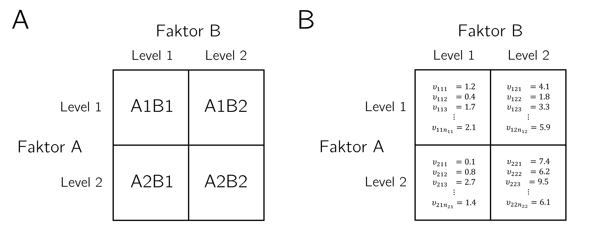
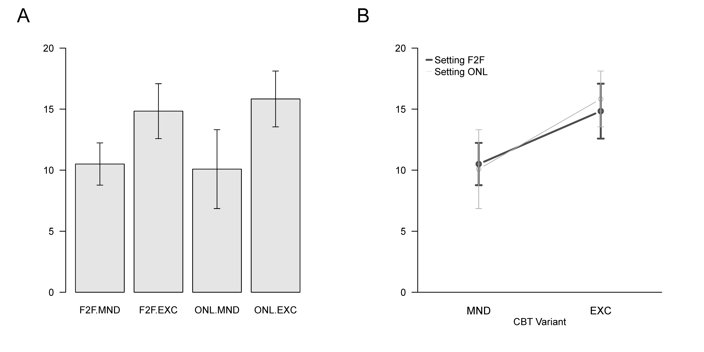

| Setting | Variant | dBDI |
|---|---|---|
| F2F | MND | 12 |
| F2F | MND | 11 |
| F2F | MND | 8 |
| F2F | MND | 8 |
| F2F | MND | 12 |
| F2F | MND | 12 |
| F2F | MND | 9 |
| F2F | MND | 10 |
| F2F | MND | 12 |
| F2F | MND | 13 |
| F2F | MND | 10 |
| F2F | MND | 9 |
| F2F | EXC | 9 |
| F2F | EXC | 6 |
| F2F | EXC | 10 |
| F2F | EXC | 11 |
| F2F | EXC | 10 |
| F2F | EXC | 14 |
| F2F | EXC | 11 |
| F2F | EXC | 9 |
| F2F | EXC | 6 |
| F2F | EXC | 10 |
| F2F | EXC | 10 |
| F2F | EXC | 12 |
| ONL | MND | 9 |
| ONL | MND | 15 |
| ONL | MND | 17 |
| ONL | MND | 18 |
| ONL | MND | 17 |
| ONL | MND | 17 |
| ONL | MND | 18 |
| ONL | MND | 15 |
| ONL | MND | 15 |
| ONL | MND | 18 |
| ONL | MND | 9 |
| ONL | MND | 13 |
| ONL | EXC | 16 |
| ONL | EXC | 19 |
| ONL | EXC | 14 |
| ONL | EXC | 17 |
| ONL | EXC | 17 |
| ONL | EXC | 16 |
| ONL | EXC | 13 |
| ONL | EXC | 16 |
| ONL | EXC | 20 |
| ONL | EXC | 13 |
| ONL | EXC | 16 |
| ONL | EXC | 13 |
42 Two-way analysis of variance
42.1 Application scenario
The classical application scenario of a two-way analysis of variance (two-way ANOVA) is a randomized, fully crossed two-factor study design consisting of a univariate dependent variable measured on randomized experimental units and two independent variables, which usually each have at least two levels. In the context of analysis of variance, the independent variables are also called factors, and their values are called factor levels. In a fully crossed design, each level of one factor is combined with all levels of the other factor. The combination of two specific factor levels is called a cell of the design. Because groups of experimental units are usually assigned to the cells of a two-way ANOVA design, these cells are also often called groups or experimental conditions.
Specific two-factor study designs are usually named by their factor levels. An \(I \times J\) study design, and its corresponding \(I \times J\) two-way ANOVA, therefore implies that \(I\) factor levels of the first factor, called factor A in the following, are crossed with \(J\) factor levels of the second factor, called factor B in the following. The following table gives names and factor levels for some possible two-way ANOVA designs.
| \(2 \times 2\) two-way ANOVA | \(\Rightarrow\) | factor A with levels 1, 2 | factor B with levels 1, 2 |
| \(2 \times 3\) two-way ANOVA | \(\Rightarrow\) | factor A with levels 1, 2 | factor B with levels 1, 2, 3 |
| \(4 \times 2\) two-way ANOVA | \(\Rightarrow\) | factor A with levels 1, 2, 3, 4 | factor B with levels 1, 2 |
| \(3 \times 1\) two-way ANOVA | \(\Rightarrow\) | factor A with levels 1, 2, 3 | factor B with level 1 |
In general, \(2 \times 2\) two-way ANOVA designs are very popular and make it possible to discuss the essential characteristics of two-way analysis-of-variance designs. We therefore focus largely on this case in the following. In Figure 42.1 A, we visualize the conceptual design of a \(2 \times 2\) two-way ANOVA, where we denote the design cells by A1B1, A1B2, A2B1, and A2B2.
Figure 42.1 B visualizes that a group of data points corresponds to each cell of the design. We use the following index convention: \(y_{ijk}\) denotes the data value of the \(k\)th experimental unit in the \(i\)th level of factor A and the \(j\)th level of factor B, where \(k=1,\ldots,n_{ij}\) and, in the present case, \(i=1,2\) and \(j=1,2\). If the number of data values \(n_{ij}\) is identical in each cell, the design is again called a balanced design.
Main effects and interactions
In two-way ANOVA designs, one is intuitively interested in main effects and interactions, which initially refer purely descriptively to the pattern of cell-specific group means.

For the case of a \(2 \times 2\) two-way ANOVA, one intuitively speaks of a main effect of factor A if the group means differ between level 1 and level 2 of factor A, averaged across the two levels of factor B. Similarly, one speaks of a main effect of factor B if the group means differ between level 1 and level 2 of factor B, averaged across the two levels of factor A.
An interaction of factors A and B is present if the difference between the group means for factor A between levels 1 and 2 differs depending on level 1 or level 2 of factor B, or equivalently if the difference between the group means for factor B between levels 1 and 2 differs depending on level 1 or level 2 of factor A.
Main effects thus intuitively concern marginal differences, whereas interactions concern differences of differences. The presence of an interaction only says that differences between the group means for the levels of one experimental factor change as a function of the levels of the other experimental factor; it does not explain why this is the case. In other words, main effects and interactions in analysis of variance are data patterns, not scientific theories. The frequentist inferential safeguarding of these data patterns is the topic of this chapter.
Application example
As a concrete application example from intervention evaluation, we consider an analysis of BDI pre-post intervention difference values for two settings, face-to-face and online, and two variants, mindfulness and exercise, of cognitive behavioral therapy (CBT; Figure 42.2). Setting is factor A with levels (1) face-to-face (F2F) and (2) online (ONL), and variant is factor B with levels (1) mindfulness (MND) and (2) exercise (EXC). Each intervention condition arising from crossing the factor levels is assigned a group of \(n_{ij}:=12\) patients, and for each patient the difference between the pre-intervention and post-intervention BDI value is determined and denoted by dBDI.

Table 42.1 shows an example data set. Each row represents a patient, the column Setting denotes the level of the therapy-setting factor corresponding to this patient, and the column Variant denotes the corresponding level of the therapy-variant factor. The corresponding dBDI row value represents the pre-post intervention BDI difference value of the respective patient. High values indicate a strong improvement, low values indicate a rather slight improvement in depressive symptoms.
Figure 42.3 shows two frequently used visualization forms for descriptive statistics, here group means and standard deviations, in \(2 \times 2\) two-way ANOVA scenarios. Panel A shows the factor-level combination-specific group means and their standard deviations as a bar chart. Panel B shows the same data as a line plot with error bars. The two lines correspond to the two levels of the setting factor, F2F (dark gray line) and ONL (light gray line). The values on the x-axis correspond to the two levels of the variant factor, MND and EXC.

42.2 Model formulation
To discuss the special case of the GLM for the two-way ANOVA scenario, we proceed in two steps. First, we introduce the additive two-way ANOVA model, which can model only the main effects of the factors, but not their interaction. Correspondingly, main-effect parameters can be estimated and inferentially evaluated on the basis of this model. Second, we introduce the two-way ANOVA model with interaction, which models both the main effects of the factors and their interaction and on whose basis both main-effect and interaction parameters can be estimated and inferentially evaluated. In both cases, the central topic of model formulation, as in one-way ANOVA, is to move from an intuition for modeling the expectation parameters of the cells of the two-way ANOVA scenario to a non-overparameterized representation using effect parameters.
42.2.1 Additive two-way ANOVA model
In analogy to one-way ANOVA, in the additive two-way ANOVA model one wants to model the group expectation values \(\mu_{ij}\), with \(i=1,\ldots,I\) for the levels of factor A and \(j=1,\ldots,J\) for the levels of factor B, as the sum of a group-unspecific expectation value and the effects of the levels of factor A and factor B.
We denote the group-unspecific expectation parameter by \(\mu_0\), the effect of level \(i\) of factor A by \(\alpha_i\), and the effect of level \(j\) of factor B by \(\beta_j\); here \(\beta_j\) therefore does denote the \(j\)th entry of the beta-parameter vector. For example, for \(I:=J:=2\) this gives \[\begin{equation} \begin{array}{l|l} \mu_{11}:=\mu_{0}+\alpha_{1}+\beta_{1} & \mu_{12}:=\mu_{0}+\alpha_{1}+\beta_{2} \\\hline \mu_{21}:=\mu_{0}+\alpha_{2}+\beta_{1} & \mu_{22}:=\mu_{0}+\alpha_{2}+\beta_{2}. \end{array} \end{equation}\]
As in one-way ANOVA, this representation of the group expectation values \(\mu_{ij}\) is overparameterized. Specifically, the four expectation parameters \(\mu_{11},\mu_{12},\mu_{21},\mu_{22}\) are represented by the five parameters \(\mu_0,\alpha_1,\alpha_2,\beta_1,\beta_2\). To guarantee a unique representation of the \(\mu_{ij}\), it is again natural to define the effect of the first level of each factor as zero, \[\begin{equation} \alpha_{1}:=\beta_{1}:=0, \end{equation}\] thereby establishing the factor-level combination A1B1 as the reference group. For \(I:=J:=2\) this yields \[\begin{equation} \begin{array}{l|l} \mu_{11} := \mu_{0} & \mu_{12} := \mu_{0}+\beta_{2} \\\hline \mu_{21} :=\mu_{0}+\alpha_{2} & \mu_{22}:=\mu_{0}+\alpha_{2}+\beta_{2}. \end{array} \end{equation}\]
Thus the four expectation parameters are represented by only three effect parameters, \(\mu_0,\alpha_2,\beta_2\). In this sense, the additive two-way ANOVA model is even underparameterized, which allows the introduction of an interaction parameter in the next section. As in one-way ANOVA, however, the interpretations of \(\mu_0,\alpha_2,\beta_2\) change in this effect representation with reference group: \(\mu_0\) is the expectation value of the factor-level combination A1B1, \(\alpha_2\) is the difference when moving from level 1 to level 2 of factor A, and \(\beta_2\) is the difference when moving from level 1 to level 2 of factor B.
Definition 42.1 (Additive two-way ANOVA model with reference group) Let \(y_{ijk}\), with \(i=1,\ldots,I\), \(j=1,\ldots,J\), and \(k=1,\ldots,n_{ij}\), be the random variable that models the \(k\)th data point at the \(i\)th level of factor A and the \(j\)th level of factor B in a two-way ANOVA application scenario. Then the additive two-way ANOVA model with reference group has the structural form \[\begin{equation} y_{ijk} = \mu_{ij}+\varepsilon_{ijk} \mbox{ with } \varepsilon_{ijk} \sim N\left(0, \sigma^{2}\right) \mbox{ i.i.d. for } i=1,\ldots,I,\ j=1,\ldots,J,\ k=1,\ldots,n_{ij}, \end{equation}\] and the data distribution form \[\begin{equation} y_{ijk} \sim N\left(\mu_{ij}, \sigma^{2}\right) \mbox{ independent for } i=1,\ldots,I,\ j=1,\ldots,J,\ k=1,\ldots,n_{ij}. \end{equation}\] Within each factor-level combination \((i,j)\), the \(y_{ijk}\), \(k=1,\ldots,n_{ij}\), are identically distributed, with \[\begin{equation} \mu_{ij}:=\mu_{0}+\alpha_{i}+\beta_{j} \mbox{ for } i=1,\ldots,I,\ j=1,\ldots,J \mbox{ and } \alpha_{1}:=\beta_{1}:=0, \end{equation}\] and \(\sigma^{2}>0\).
We omit a general design-matrix form in Definition 42.1 and consider it below only for the \(2 \times 2\) special case.
The expressivity of the additive two-way ANOVA model is, as emphasized above, limited to representing main effects. The following parameter examples and Figure 42.4 illustrate this.
Example (1). Let \(\mu_0:=1,\alpha_2:=1,\beta_2:=0\). The effect parameter for the main effect of factor A is different from zero, whereas the effect parameter for the main effect of factor B is zero. The group expectation values are \[\begin{equation} \begin{array}{l|l} \mu_{11}=1 & \mu_{12}=1 \\\hline \mu_{21}=2 & \mu_{22}=2. \end{array} \end{equation}\]
Example (2). Let \(\mu_0:=1,\alpha_2:=0,\beta_2:=1\). The main-effect parameter for factor A is zero, whereas the main-effect parameter for factor B is different from zero. The group expectation values are \[\begin{equation} \begin{array}{l|l} \mu_{11}=1 & \mu_{12}=2 \\\hline \mu_{21}=1 & \mu_{22}=2. \end{array} \end{equation}\]
Example (3). Let \(\mu_0:=1,\alpha_2:=1,\beta_2:=1\). The effect parameters for the main effects of both factors are different from zero. The group expectation values are \[\begin{equation} \begin{array}{l|l} \mu_{11}=1 & \mu_{12}=2 \\\hline \mu_{21}=2 & \mu_{22}=3. \end{array} \end{equation}\]
With respect to the line-plot form of the group expectation values of the additive two-way ANOVA, the lines corresponding to the levels of factor A are always parallel.

For the case of a \(2 \times 2\) two-way ANOVA, Definition 42.2 gives the additive model with reference group including its design-matrix form.
Definition 42.2 (Additive \(2 \times 2\) two-way ANOVA model with reference group) Let \(y_{ijk}\), with \(i=1,2\), \(j=1,2\), and \(k=1,\ldots,n_{ij}\), be the random variable that models the \(k\)th data point at the \(i\)th level of factor A and the \(j\)th level of factor B in a \(2 \times 2\) two-way ANOVA application scenario. Then, with \(\sigma^2>0\), the additive \(2 \times 2\) two-way ANOVA model with reference group has the structural form \[\begin{equation} y_{ijk} = \mu_{ij}+\varepsilon_{ijk} \mbox{ with } \varepsilon_{ijk} \sim N\left(0, \sigma^{2}\right) \mbox{ i.i.d. for } i=1,2,\ j=1,2,\ k=1,\ldots,n_{ij}, \end{equation}\] the data distribution form \[\begin{equation} y_{ijk} \sim N\left(\mu_{ij}, \sigma^{2}\right) \mbox{ independent for } i=1,2,\ j=1,2,\ k=1,\ldots,n_{ij}, \end{equation}\] with \[\begin{equation} \mu_{ij}:=\mu_{0}+\alpha_{i}+\beta_{j} \mbox{ for } i=1,2,\ j=1,2 \mbox{ and } \alpha_{1}:=\beta_{1}:=0, \end{equation}\] as well as the design-matrix form \[\begin{equation} y \sim N\left(X\beta,\sigma^{2}I_n\right), \end{equation}\] where \[\begin{equation} y := \begin{pmatrix} y_{111} \\ \vdots \\ y_{11 n_{11}} \\ y_{121} \\ \vdots \\ y_{12 n_{12}} \\ y_{211} \\ \vdots \\ y_{21 n_{21}} \\ y_{221} \\ \vdots \\ y_{22 n_{22}} \end{pmatrix}, X = \begin{pmatrix} 1 & 0 & 0 \\ \vdots & \vdots & \vdots \\ 1 & 0 & 0 \\ 1 & 0 & 1 \\ \vdots & \vdots & \vdots \\ 1 & 0 & 1 \\ 1 & 1 & 0 \\ \vdots & \vdots & \vdots \\ 1 & 1 & 0 \\ 1 & 1 & 1 \\ \vdots & \vdots & \vdots \\ 1 & 1 & 1 \end{pmatrix} \in \mathbb{R}^{n \times 3}, \beta:= \begin{pmatrix} \mu_{0} \\ \alpha_{2} \\ \beta_{2} \end{pmatrix} \in \mathbb{R}^{3} \mbox{ and } \sigma^{2}>0. \end{equation}\]
42.2.2 Two-way ANOVA model with interaction
In two-way ANOVA with interaction, one wants to model the group expectation values \(\mu_{ij}\) as the sum of a group-unspecific expectation value, the effects of the levels of factor A and factor B, and the interaction of the factor levels. We denote the group-unspecific expectation parameter by \(\mu_0\), the effect of level \(i\) of factor A by \(\alpha_i\), the effect of level \(j\) of factor B by \(\beta_j\), and the interaction of level \(i\) of factor A with level \(j\) of factor B by \(\gamma_{ij}\). For \(I:=J:=2\), \[\begin{equation} \begin{array}{l|l} \mu_{11}:=\mu_{0}+\alpha_{1}+\beta_{1}+\gamma_{11} & \mu_{12}:=\mu_{0}+\alpha_{1}+\beta_{2}+\gamma_{12} \\\hline \mu_{21}:=\mu_{0}+\alpha_{2}+\beta_{1}+\gamma_{21} & \mu_{22}:=\mu_{0}+\alpha_{2}+\beta_{2}+\gamma_{22}. \end{array} \end{equation}\]
This representation is multiply overparameterized. To guarantee a unique representation, we define the effect of the first level of each factor and each interaction involving a first level as zero, \[\begin{equation} \alpha_{1}:=\beta_{1}:=\gamma_{i1}:=\gamma_{1j}:=0 \mbox{ for } i=1,\ldots,I,\ j=1,\ldots,J, \end{equation}\] thereby establishing A1B1 as the reference group. For \(I:=J:=2\) this yields \[\begin{equation} \begin{array}{l|l} \mu_{11}:=\mu_{0} & \mu_{12}:=\mu_{0}+\beta_{2} \\\hline \mu_{21}:=\mu_{0}+\alpha_{2} & \mu_{22}:=\mu_{0}+\alpha_{2}+\beta_{2}+\gamma_{22}. \end{array} \end{equation}\] The four expectation parameters are now represented by the four effect parameters \(\mu_0,\alpha_2,\beta_2,\gamma_{22}\). Here \(\gamma_{22}\) is a difference of differences: it quantifies how the transition from level 1 to level 2 of factor B changes when moving from level 1 to level 2 of factor A.
Definition 42.3 (Two-way ANOVA model with interaction and reference group) Let \(y_{ijk}\), with \(i=1,\ldots,I\), \(j=1,\ldots,J\), and \(k=1,\ldots,n_{ij}\), be the random variable that models the \(k\)th data point at the \(i\)th level of factor A and the \(j\)th level of factor B in a two-way ANOVA application scenario. Then the two-way ANOVA model with interaction and reference group has the structural form \[\begin{equation} y_{ijk}=\mu_{ij}+\varepsilon_{ijk} \mbox{ with } \varepsilon_{ijk} \sim N\left(0,\sigma^{2}\right) \mbox{ i.i.d. for } i=1,\ldots,I,\ j=1,\ldots,J,\ k=1,\ldots,n_{ij}, \end{equation}\] the data distribution form \[\begin{equation} y_{ijk} \sim N\left(\mu_{ij},\sigma^{2}\right) \mbox{ independent for } i=1,\ldots,I,\ j=1,\ldots,J,\ k=1,\ldots,n_{ij}, \end{equation}\] with \[\begin{equation} \mu_{ij}:=\mu_{0}+\alpha_{i}+\beta_{j}+\gamma_{ij}, \end{equation}\] \[\begin{equation} \alpha_{1}:=\beta_{1}:=\gamma_{i1}:=\gamma_{1j}:=0 \mbox{ for } i=1,\ldots,I,\ j=1,\ldots,J, \end{equation}\] and \(\sigma^{2}>0\).
The expressivity of the two-way ANOVA model with interaction corresponds to the consideration of main effects and interaction as discussed in the introduction. The following parameter examples and Figure 42.5 illustrate this.
Example (1). Let \(\mu_0:=1,\alpha_2:=0,\beta_2:=0,\gamma_{22}=2\). The main effects are zero, but the interaction effect is positive. The group expectation values are \((1,1,1,3)\).
Example (2). Let \(\mu_0:=1,\alpha_2:=1,\beta_2:=1,\gamma_{22}=-2\). Both main effects are positive and the interaction effect is negative. The group expectation values are \((1,2,2,1)\).
Example (3). Let \(\mu_0:=1,\alpha_2:=1,\beta_2:=0,\gamma_{22}=1\). The effect parameter for factor A is positive, the one for factor B is zero, and the interaction effect is positive. The group expectation values are \((1,1,2,3)\).
Example (4). Let \(\mu_0:=1,\alpha_2:=0,\beta_2:=1,\gamma_{22}=1\). The effect parameter for factor A is zero, the one for factor B is positive, and the interaction effect is positive. The group expectation values are \((1,2,1,3)\).
The examples show that the expressivity of two-way ANOVA with interaction is much higher than the expressivity of the purely additive model. In the line-plot visualization, a nonzero interaction term implies nonparallel lines.

Definition 42.4 (\(2 \times 2\) two-way ANOVA model with interaction and reference group) Let \(y_{ijk}\), with \(i=1,2\), \(j=1,2\), and \(k=1,\ldots,n_{ij}\), be the random variable that models the \(k\)th data point at the \(i\)th level of factor A and the \(j\)th level of factor B in a \(2 \times 2\) two-way ANOVA application scenario. Then the \(2 \times 2\) two-way ANOVA model with interaction and reference group has the structural and data distribution forms stated above, and, for \(n:=\sum_{i=1}^{2}\sum_{j=1}^{2} n_{ij}\), the design-matrix form \[\begin{equation} y \sim N\left(X\beta,\sigma^{2}I_n\right), \end{equation}\] with \[\begin{equation} X = \begin{pmatrix} 1 & 0 & 0 & 0 \\ \vdots & \vdots & \vdots & \vdots \\ 1 & 0 & 0 & 0 \\ 1 & 0 & 1 & 0 \\ \vdots & \vdots & \vdots & \vdots \\ 1 & 0 & 1 & 0 \\ 1 & 1 & 0 & 0 \\ \vdots & \vdots & \vdots & \vdots \\ 1 & 1 & 0 & 0 \\ 1 & 1 & 1 & 1 \\ \vdots & \vdots & \vdots & \vdots \\ 1 & 1 & 1 & 1 \end{pmatrix} \in \mathbb{R}^{n \times 4}, \beta := \begin{pmatrix} \mu_{0} \\ \alpha_{2} \\ \beta_{2} \\ \gamma_{22} \end{pmatrix} \in \mathbb{R}^{4},\quad \sigma^{2}>0. \end{equation}\]
For \(n_{ij}:=4\), the design matrix has 16 rows and the four columns shown in Definition 42.4. The following R code realizes data in this example.
library(MASS) # multivariate normal distribution
I = 2 # number of levels of factor A
J = 2 # number of levels of factor B
n_ij = 4 # number of data points in each cell
n = I*J*n_ij # number of data points
p = 1 + (I-1)+(J-1)+(I*J-3) # number of parameters
Dmat = matrix(c(1,0,0,0, # prototypical design matrix for balanced designs
1,0,1,0,
1,1,0,0,
1,1,1,1),
nrow = p,
byrow = TRUE)
C = matrix(rep(1,n_ij),nrow = n_ij) # prototypical cell vector
X = kronecker(Dmat,C) # Kronecker-product design matrix
I_n = diag(n) # n x n identity matrix
beta = matrix(c(1,1,1,1), nrow = p) # beta = (mu_0,alpha_2,beta_2,gamma_22)
sigsqr = 10 # sigma^2
y = mvrnorm(1, X %*% beta, sigsqr*I_n) # one realization42.3 Model estimation
We now consider beta-parameter estimators in the additive \(2 \times 2\) two-way ANOVA model with reference group and in the \(2 \times 2\) two-way ANOVA model with interaction and reference group. The estimators for the beta-parameter components turn out to be weighted sums of the group-specific sample means. For simplicity, we assume balanced designs.
Theorem 42.1 (Beta-parameter estimation in the additive \(2 \times 2\) two-way ANOVA model with reference group) Let the design-matrix form of a balanced additive \(2 \times 2\) two-way ANOVA model with reference group be given. Then the beta-parameter estimator is \[\begin{equation} \hat{\beta} := \begin{pmatrix} \hat{\mu}_{0} \\ \hat{\alpha}_{2} \\ \hat{\beta}_{2} \end{pmatrix} = \begin{pmatrix} \frac{3}{4} \bar{y}_{11}+\frac{1}{4}\left(\bar{y}_{12}+\bar{y}_{21}\right)-\frac{1}{4} \bar{y}_{22} \\ \frac{1}{2}\left(\bar{y}_{21}+\bar{y}_{22}\right)-\frac{1}{2}\left(\bar{y}_{11}+\bar{y}_{12}\right) \\ \frac{1}{2}\left(\bar{y}_{12}+\bar{y}_{22}\right)-\frac{1}{2}\left(\bar{y}_{11}+\bar{y}_{21}\right) \end{pmatrix}, \end{equation}\] where \[\begin{equation} \bar{y}_{ij}:=\frac{1}{n_{ij}} \sum_{k=1}^{n_{ij}} y_{ijk} \end{equation}\] denotes the sample mean of the \((i,j)\)th group of the \(2 \times 2\) design.
Proof. The result follows from the GLM beta-parameter estimator \(\hat{\beta}=(X^TX)^{-1}X^Ty\). For the balanced additive \(2 \times 2\) design, \[\begin{equation} X^{T}X = n_{ij} \begin{pmatrix} 4 & 2 & 2 \\ 2 & 2 & 1 \\ 2 & 1 & 2 \end{pmatrix}, \quad \left(X^{T}X\right)^{-1} = \frac{1}{n_{ij}} \begin{pmatrix} \frac{3}{4} & -\frac{1}{2} & -\frac{1}{2} \\ -\frac{1}{2} & 1 & 0 \\ -\frac{1}{2} & 0 & 1 \end{pmatrix}, \end{equation}\] and multiplication with \(X^Ty\) yields the stated weighted sums of cell means.
Example. The following R code illustrates the relation between beta-parameter estimator components and group-specific sample means in the example data set.
# data reformatting
D = read.csv("./_data/509-two-way-analysis-of-variance.csv") # data set
A1B1 = D$dBDI[D$Setting == "F2F" & D$Variant == "MND" ] # face-to-face, mindfulness
A1B2 = D$dBDI[D$Setting == "F2F" & D$Variant == "EXC" ] # face-to-face, exercise
A2B1 = D$dBDI[D$Setting == "ONL" & D$Variant == "MND" ] # online, mindfulness
A2B2 = D$dBDI[D$Setting == "ONL" & D$Variant == "EXC" ] # online, exercise
# data matrix for group means
n_ij = length(A1B1) # number of data points per group
Y = matrix(c(A1B1,A1B2,A2B1,A2B2), nrow = n_ij) # data matrix
bar_y = colMeans(Y) # cell means
# model estimation
I = 2 # number of levels of factor A
J = 2 # number of levels of factor B
n = I*J*n_ij # number of data points
p = 1 + (I-1)+(J-1)+(I*J-3) # number of parameters
Dmat = matrix(c(1,0,0, # prototypical design matrix
1,0,1,
1,1,0,
1,1,1), nrow = p, byrow = TRUE)
C = matrix(rep(1,n_ij),nrow = n_ij) # prototypical cell vector
X = kronecker(Dmat,C) # Kronecker-product design matrix
y = matrix(c(A1B1,A1B2,A2B1,A2B2), nrow = n) # data vector
beta_hat = solve(t(X) %*% X) %*% t(X) %*% y # beta-parameter estimator
eps_hat = y - X %*% beta_hat # residual vector
sigsqr_hat = (t(eps_hat) %*% eps_hat) /(n-p) # variance-parameter estimatorhat{beta} : 10.15 5.29 0.04
hat{sigsqr} : 6.07
bar{y}_11,bar{y}_12,bar{y}_21,bar{y}_22 : 10.5 9.83 15.08 15.83
3/4bar{y}_11 + 1/4(bar{y}_12 + bar{y}_21) - 1/4bar{y}_22 : 10.15
1/2(bar{y}_21 + bar{y}_22) - 1/2(bar{y}_11 + bar{y}_12) : 5.29
1/2(bar{y}_12 + bar{y}_22) - 1/2(bar{y}_11 + bar{y}_21) : 0.04Theorem 42.2 (Beta-parameter estimation in the \(2 \times 2\) two-way ANOVA model with interaction and reference group) Let the design-matrix form of a balanced \(2 \times 2\) two-way ANOVA model with interaction and reference group be given. Then the beta-parameter estimator is \[\begin{equation} \hat{\beta}:= \begin{pmatrix} \hat{\mu}_{0} \\ \hat{\alpha}_{2} \\ \hat{\beta}_{2} \\ \hat{\gamma}_{22} \end{pmatrix} = \begin{pmatrix} \bar{y}_{11} \\ \bar{y}_{21}-\bar{y}_{11} \\ \bar{y}_{12}-\bar{y}_{11} \\ (\bar{y}_{11}-\bar{y}_{12})-(\bar{y}_{21}-\bar{y}_{22}) \end{pmatrix}. \end{equation}\]
Proof. For the balanced \(2 \times 2\) design with interaction, \[\begin{equation} X^{T}X = n_{ij} \begin{pmatrix} 4 & 2 & 2 & 1 \\ 2 & 2 & 1 & 1 \\ 2 & 1 & 2 & 1 \\ 1 & 1 & 1 & 1 \end{pmatrix}, \quad \left(X^{T}X\right)^{-1} = \frac{1}{n_{ij}} \begin{pmatrix} 1 & -1 & -1 & 1 \\ -1 & 2 & 1 & -2 \\ -1 & 1 & 2 & -2 \\ 1 & -2 & -2 & 4 \end{pmatrix}. \end{equation}\] Multiplying this inverse with \(X^Ty\) yields the cell-mean expressions in the theorem.
The following R code illustrates the relation in the example data set.
# data reformatting
D = read.csv("./_data/509-two-way-analysis-of-variance.csv") # data set
A1B1 = D$dBDI[D$Setting == "F2F" & D$Variant == "MND" ] # face-to-face, mindfulness
A1B2 = D$dBDI[D$Setting == "F2F" & D$Variant == "EXC" ] # face-to-face, exercise
A2B1 = D$dBDI[D$Setting == "ONL" & D$Variant == "MND" ] # online, mindfulness
A2B2 = D$dBDI[D$Setting == "ONL" & D$Variant == "EXC" ] # online, exercise
# data matrix for group means
n_ij = length(A1B1) # number of data points per group
Y = matrix(c(A1B1,A1B2,A2B1,A2B2), nrow = n_ij) # data matrix
bar_y = colMeans(Y) # cell means
# model estimation
I = 2 # number of levels of factor A
J = 2 # number of levels of factor B
n = I*J*n_ij # number of data points
p = 1 + (I-1)+(J-1)+(I*J-3) # number of parameters
Dmat = matrix(c(1,0,0,0, # prototypical design matrix
1,0,1,0,
1,1,0,0,
1,1,1,1), nrow = p, byrow = TRUE)
C = matrix(rep(1,n_ij),nrow = n_ij) # prototypical cell vector
X = kronecker(Dmat,C) # Kronecker-product design matrix
y = matrix(c(A1B1,A1B2,A2B1,A2B2), nrow = n) # data vector
beta_hat = solve(t(X) %*% X) %*% t(X) %*% y # beta-parameter estimator
eps_hat = y - X %*% beta_hat # residual vector
sigsqr_hat = (t(eps_hat) %*% eps_hat) /(n-p) # variance-parameter estimatorhat{beta} : 10.5 4.58 -0.67 1.42
hat{sigsqr} : 5.94
bar{y}_11,bar{y}_12,bar{y}_21,bar{y}_22 : 10.5 9.83 15.08 15.83
bar{y}_11 : 10.5
bar{y}_21 - bar{y}_11 : 4.58
bar{y}_12 - bar{y}_11 : -0.67
bar{y}_11 + bar{y}_22 - bar{y}_12 - bar{y}_21 : 1.4242.4 Model evaluation
The inferential evaluation of main-effect and interaction parameters in two-way ANOVA models can be viewed from several perspectives. Analogously to one-way ANOVA, sum-of-squares decompositions can be developed and used to define corresponding F-statistics. Here we follow the alternative approach of formulating F-statistics for main effects and interactions against the background of model comparisons in the corresponding two-way ANOVA models. We restrict ourselves to (1) evaluation of main effects in the additive \(2 \times 2\) two-way ANOVA model with reference group and (2) evaluation of the interaction in the \(2 \times 2\) two-way ANOVA model with interaction and reference group.
Evaluation of main effects in the additive \(2 \times 2\) two-way ANOVA model
Theorem 42.3 (Test statistics for main effects) Let \[\begin{equation} y = X\beta+\varepsilon \mbox{ with } \varepsilon \sim N\left(0_{n}, \sigma^{2} I_{n}\right) \end{equation}\] be the design-matrix form of the additive \(2 \times 2\) two-way ANOVA model with reference group, where the \(n \times 1\) columns of \(X\) are denoted by \[\begin{equation} X:= \begin{pmatrix} X_{\mu_{0}} & X_{\alpha_{2}} & X_{\beta_{2}} \end{pmatrix} \in \mathbb{R}^{n \times 3}. \end{equation}\] Then:
An F-test statistic for the main effect of factor A is the F-statistic of the GLM with \[\begin{equation} X_{A}:= \begin{pmatrix} X_{\mu_{0}} & X_{\beta_{2}} & X_{\alpha_{2}} \end{pmatrix},\quad \beta_A := \begin{pmatrix} \mu_0 \\ \beta_2 \\ \alpha_2 \end{pmatrix}, \quad p_0:=2,\ p_1:=1. \end{equation}\]
An F-test statistic for the main effect of factor B is the F-statistic of the GLM with \[\begin{equation} X_{B}:= \begin{pmatrix} X_{\mu_{0}} & X_{\alpha_{2}} & X_{\beta_{2}} \end{pmatrix},\quad \beta_B := \begin{pmatrix} \mu_0 \\ \alpha_2 \\ \beta_2 \end{pmatrix}, \quad p_0:=2,\ p_1:=1. \end{equation}\]
Definition 42.5 (Test hypotheses and tests for main effects) Let the additive \(2 \times 2\) two-way ANOVA model be given, and let the F-test statistics for the main effects of factors A and B be denoted by \(F_A\) and \(F_B\). Then:
The critical-value-based test \[\begin{equation} \phi_A(y):=1_{\{F_A \geq k\}} \mbox{ with null hypothesis } H_0^A:\alpha_2=0 \end{equation}\] defines the F-test of the main effect of factor A in the model with \(X_A,\beta_A\).
The critical-value-based test \[\begin{equation} \phi_B(y):=1_{\{F_B \geq k\}} \mbox{ with null hypothesis } H_0^B:\beta_2=0 \end{equation}\] defines the F-test of the main effect of factor B in the model with \(X_B,\beta_B\).
Theorem 42.4 (Test-size control and p-values for main effects) With the above definitions and the CDF \(\varphi\) of the \(f\) distribution:
\(\phi_A\) is a level-\(\alpha_0\) test with test size \(\alpha_0\) if the critical value is \[\begin{equation} k_{\alpha_0}^{A}:=\varphi^{-1}\left(1-\alpha_0;1,n-3\right). \end{equation}\] The p-value associated with an observed value \(f_A\) of \(F_A\) is \[\begin{equation} p_A\mbox{-value}:=1-\varphi\left(f_A;1,n-3\right). \end{equation}\]
\(\phi_B\) is a level-\(\alpha_0\) test with test size \(\alpha_0\) if the critical value is \[\begin{equation} k_{\alpha_0}^{B}:=\varphi^{-1}\left(1-\alpha_0;1,n-3\right). \end{equation}\] The p-value associated with an observed value \(f_B\) of \(F_B\) is \[\begin{equation} p_B\mbox{-value}:=1-\varphi\left(f_B;1,n-3\right). \end{equation}\]
Application example
The following R code demonstrates the evaluation procedure for main effects in the additive \(2 \times 2\) two-way ANOVA model with reference group.
D = read.csv("./_data/509-two-way-analysis-of-variance.csv") # data set
A1B1 = D$dBDI[D$Setting == "F2F" & D$Variant == "MND" ] # face-to-face, mindfulness
A1B2 = D$dBDI[D$Setting == "F2F" & D$Variant == "EXC" ] # face-to-face, exercise
A2B1 = D$dBDI[D$Setting == "ONL" & D$Variant == "MND" ] # online, mindfulness
A2B2 = D$dBDI[D$Setting == "ONL" & D$Variant == "EXC" ] # online, exercise
I = 2 # number of levels of factor setting
J = 2 # number of levels of factor variant
n_ij = length(A1B1) # balanced ANOVA design
n = I*J*n_ij # number of data points
y = matrix(c(A1B1,A1B2,A2B1,A2B2), nrow = n) # data vector
Dmat = matrix(c(1,0,0,1,0,1,1,1,0,1,1,1), # prototypical design matrix
nrow = I*J, byrow = TRUE)
C = matrix(rep(1,n_ij),nrow = n_ij) # prototypical cell vector
X = kronecker(Dmat,C) # Kronecker-product design matrix
XH = list(X[,c(1,3,2)], X) # model variants
alpha_0 = 0.05 # significance level
Eff = rep(NaN,2) # F-test statistic
k_alpha_0 = rep(NaN,2) # critical value
phi = rep(NaN,2) # test value
p_vals = rep(NaN,2) # p-value
for(i in 1:2) {
X = XH[[i]] # full-model design matrix
X_0 = X[,-3] # reduced-model design matrix
p = ncol(X) # number of full-model parameters
p_0 = ncol(X_0) # number of reduced-model parameters
p_1 = p - p_0 # number of additional parameters
beta_hat_0 = solve(t(X_0)%*%X_0)%*%t(X_0)%*%y # reduced-model beta estimator
beta_hat = solve(t(X) %*%X )%*%t(X) %*%y # full-model beta estimator
eps_hat_0 = y-X_0%*%beta_hat_0 # reduced-model residual vector
eps_hat = y - X%*%beta_hat # full-model residual vector
eh0_eh0 = t(eps_hat_0) %*% eps_hat_0 # reduced-model RSS
eh_eh = t(eps_hat) %*% eps_hat # full-model RSS
sigsqr_hat = eh_eh/(n-p) # full-model variance estimator
Eff[i] = ((eh0_eh0-eh_eh)/p_1)/sigsqr_hat # F-statistic
k_alpha_0[i] = qf(1-alpha_0, p_1, n-p) # critical value
if(Eff[i] >= k_alpha_0[i]){ phi[i] = 1 } else { phi[i] = 0 } # test value
p_vals[i] = 1 - pf(Eff[i], p_1,n-p) # p-value
} f k phi p.value
Setting 56.575 4.057 1 0.000
Variant 0.004 4.057 0 0.953For the main effect of factor Setting, the F-statistic is \(F_A=0.17\) with a critical value of \(k_{0.05}=4.06\). The null hypothesis of a true, but unknown, effect parameter value of zero for factor Setting would therefore not be rejected in light of the data visualized in Figure 42.3. For the main effect of factor Variant, the F-statistic is \(F_B=51.36\) with the same critical value. The null hypothesis of a true, but unknown, effect parameter value of zero for factor Variant would therefore be rejected at \(\alpha_0:=0.05\).
The following R code demonstrates the same analysis using the R function aov().
Df Sum Sq Mean Sq F value Pr(>F)
Setting 1 336.0 336.0 56.575 1.73e-09 ***
Variant 1 0.0 0.0 0.004 0.953
Residuals 45 267.3 5.9
---
Signif. codes: 0 '***' 0.001 '**' 0.01 '*' 0.05 '.' 0.1 ' ' 1The following R code demonstrates the same analysis using the R functions lm() and anova().
Analysis of Variance Table
Response: dBDI
Df Sum Sq Mean Sq F value Pr(>F)
Setting 1 336.02 336.02 56.5753 1.728e-09 ***
Variant 1 0.02 0.02 0.0035 0.953
Residuals 45 267.27 5.94
---
Signif. codes: 0 '***' 0.001 '**' 0.01 '*' 0.05 '.' 0.1 ' ' 1Evaluation of the interaction in the \(2 \times 2\) two-way ANOVA model with interaction
Theorem 42.5 (Test statistic for the interaction) Let \[\begin{equation} y = X\beta+\varepsilon \mbox{ with } \varepsilon \sim N\left(0_{n}, \sigma^{2} I_{n}\right) \end{equation}\] be the design-matrix form of the \(2 \times 2\) two-way ANOVA model with interaction and reference group. Then the F-statistic with \(p_0:=3\) and \(p_1:=1\) is an F-test statistic for the interaction of factor A and factor B.
Definition 42.6 (Test hypothesis and test for the interaction) Let the F-test statistic for the interaction of factor A and factor B be denoted by \(F_{A \times B}\). Then the critical-value-based test \[\begin{equation} \phi_{A \times B}(y):=1_{\{F_{A \times B} \geq k\}} \mbox{ with null hypothesis } H_0^{A \times B}:\gamma_{22}=0 \end{equation}\] defines the F-test of the interaction of factor A and factor B.
Theorem 42.6 (Test-size control and p-value for the interaction) With the above definition and the CDF \(\varphi\) of the \(f\) distribution, \(\phi_{A \times B}\) is a level-\(\alpha_0\) test with test size \(\alpha_0\) if the critical value is \[\begin{equation} k_{\alpha_0}^{A \times B}:=\varphi^{-1}\left(1-\alpha_0;1,n-4\right). \end{equation}\] The p-value associated with an observed value \(f_{A \times B}\) of \(F_{A \times B}\) is \[\begin{equation} p_{A \times B}\mbox{-value}:=1-\varphi\left(f_{A \times B};1,n-4\right). \end{equation}\]
Application example
The following R code demonstrates the evaluation procedure for the interaction of the factors in the \(2 \times 2\) two-way ANOVA model with interaction and reference group.
D = read.csv("./_data/509-two-way-analysis-of-variance.csv") # data set
A1B1 = D$dBDI[D$Setting == "F2F" & D$Variant == "MND" ] # face-to-face, mindfulness
A1B2 = D$dBDI[D$Setting == "F2F" & D$Variant == "EXC" ] # face-to-face, exercise
A2B1 = D$dBDI[D$Setting == "ONL" & D$Variant == "MND" ] # online, mindfulness
A2B2 = D$dBDI[D$Setting == "ONL" & D$Variant == "EXC" ] # online, exercise
I = 2 # number of levels of factor setting
J = 2 # number of levels of factor variant
n_ij = length(A1B1) # balanced ANOVA design
n = I*J*n_ij # number of data points
y = matrix(c(A1B1,A1B2,A2B1,A2B2), nrow = n) # data vector
Dmat = matrix(c(1,0,0,0,1,0,1,0,1,1,0,0,1,1,1,1), nrow = I*J, byrow = TRUE) # prototypical design matrix
C = matrix(rep(1,n_ij),nrow = n_ij) # prototypical cell vector
X = kronecker(Dmat,C) # Kronecker-product design matrix
alpha_0 = 0.05 # significance level
X_0 = X[,-4] # reduced-model design matrix
p = ncol(X) # number of full-model parameters
p_0 = ncol(X_0) # number of reduced-model parameters
p_1 = p - p_0 # number of additional parameters
beta_hat_0 = solve(t(X_0)%*%X_0)%*%t(X_0)%*%y # reduced-model beta estimator
beta_hat = solve(t(X) %*%X )%*%t(X) %*%y # full-model beta estimator
eps_hat_0 = y-X_0%*%beta_hat_0 # reduced-model residual vector
eps_hat = y - X%*%beta_hat # full-model residual vector
eh0_eh0 = t(eps_hat_0) %*% eps_hat_0 # reduced-model RSS
eh_eh = t(eps_hat) %*% eps_hat # full-model RSS
sigsqr_hat = eh_eh/(n-p) # full-model variance estimator
f = ((eh0_eh0-eh_eh)/p_1)/sigsqr_hat # F-statistic
k_alpha_0 = qf(1-alpha_0, p_1, n-p) # critical value
if(f >= k_alpha_0){phi = 1} else {phi = 0} # test value
p_val = 1 - pf(f, p_1,n-p) # p-value f k phi p.value
Setting x Variant 1.014 4.062 0 0.319The F-statistic is \(F_{A \times B}=1.01\) with a critical value \(k_{0.05}=4.06\). The null hypothesis of a true, but unknown, effect parameter value of zero for the interaction effect would therefore not be rejected in light of the data visualized in Figure 42.3.
The following R code demonstrates the same analysis using the R function aov().
Df Sum Sq Mean Sq F value Pr(>F)
Setting 1 336.0 336.0 56.593 1.97e-09 ***
Variant 1 0.0 0.0 0.004 0.953
Setting:Variant 1 6.0 6.0 1.014 0.319
Residuals 44 261.2 5.9
---
Signif. codes: 0 '***' 0.001 '**' 0.01 '*' 0.05 '.' 0.1 ' ' 1The following R code demonstrates the same analysis using the R functions lm() and anova().
Analysis of Variance Table
Response: dBDI
Df Sum Sq Mean Sq F value Pr(>F)
Setting 1 336.02 336.02 56.5930 1.973e-09 ***
Variant 1 0.02 0.02 0.0035 0.9530
Setting:Variant 1 6.02 6.02 1.0140 0.3194
Residuals 44 261.25 5.94
---
Signif. codes: 0 '***' 0.001 '**' 0.01 '*' 0.05 '.' 0.1 ' ' 142.5 Literature notes
The popularity of analysis-of-variance procedures is generally traced back to Fisher (1925) and Fisher (1935). Everitt & Howell (2005) and Stigler (1986) provide a brief and a detailed historical overview, respectively.
Everitt, B., & Howell, D. C. (Eds.). (2005). Encyclopedia of statistics in behavioral science. John Wiley & Sons.
Fisher, R. A. (1925). Applications of "Student’s" distribution. Metron, 5, 90–104.
Fisher, R. A. (1935). The design of experiments (1. ed). Hafner Press.
Stigler, S. M. (1986). The history of statistics: The measurement of uncertainty before 1900. Belknap Press of Harvard University Press.